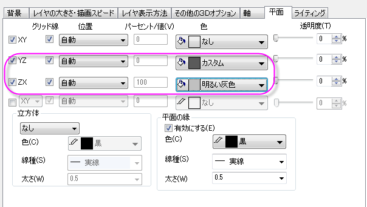

同一レイヤ内に複数曲面を追加
Multi-3DSurf-in-Layer
サマリー
下図の4つの積み上げ曲面は同じ行列データから作成されています。これらのレイヤは上からワイヤーフレーム、平面化された等高線図、ライティング効果付きの色付き曲面図、平面化された色付き等高線図として作図されています。

必要なOriginのバージョン: Origin 2015 SR0以降
学習する項目
このチュートリアルでは、以下の項目について解説します。
- 同一レイヤ内に複数曲面を追加する
- 曲面と等高線図を編集する
ステップ
複数曲面のグラフを作図する
このチュートリアルは、チュートリアルデータプロジェクト（<Origin EXE フォルダ>\Samples\TutorialData.opj）と関連しています。
また、ラーニングセンターからこのグラフを呼び出すことができます。(ヘルプ：ラーニングセンター メニューを選択、または キーボードのF11
キーを押して、グラフサンプル：3D曲面図を選択します)
- Tutorial Data.opjを開き、プロジェクト・エクスプローラ (PE)でMultiple
Surfaces in Same Layerフォルダを開きます。
- MBook8をアクティブにし、全てのデータを選択します。メインメニューで作図：3D：3Dカラーマップ曲面を選択します。グラフウィンドウには以下のようなグラフが表示されます。

- グラフウィンドウをアクティブにし、メニューからグラフ操作：レイヤ内容を選択します。開いたダイアログボックスで、MBook8を3D曲面として3回レイヤに追加（ダイアログの中央にある右向き矢印ボタンをクリック）してOKをクリックします。MBook8データの曲面図を4つグラフレイヤに追加しました。ここでは、単一曲面しか見えませんが、これからの手順で編集していきます。
- プロットをダブルクリックして、作図の詳細ダイアログボックスを開きます。 左パネルの最初のデータを選択し、面タブの表示グループにある平面とZ方向に移動チェックボックスにチェックを付け、テキストボックスに0を入力します。
2番目のプロットでは、平面のチェックは付けず、Z方向に移動チェックボックスにはチェックを付け、テキストボックスに23を入力します。3番目のプロットでは、平面のチェックとZ方向に移動チェックボックスにチェックを付け、テキストボックスに65を入力します。4番目のプロットでは、平面のチェックは付けず、Z方向に移動チェックボックスにはチェックを付け、テキストボックスに82を入力します。OKをクリックします。
-
- Z 軸をダブルクリックして軸ダイアログを開きます。スケールタブを開き、左側パネルでZ軸が選択されていることを確認してから開始を0、終了を900に設定します。

- 目盛ラベルタブを開きます。Ctrlキーを押しながらXとYのアイコンをクリックします。目盛ラベル内の表示タブで、～で割るに100000を入力します。
- タイトルタブを開き、左側パネルではXアイコンをクリックします。タイトルとしてX Coordinate/
10\+(5) meter を入力します。Yアイコンを選択し、同じタイトルタブのテキスト部分にY Coordinate/
10\+(5) meter と入力します。
- グリッド線タブを開きます。Ctrlキーを押しながらX、Y、Zのアイコンをクリックします。主グリッド線の表示のチェックをはずし、すべての軸でグリッド線を非表示にします。
- OKボタンをクリックします。これで、グラフは以下のように４つの異なる曲面を表示するようになります。
平面化した塗りつぶし等高線図の編集
- 「曲面1」をダブルクリックして、作図の詳細ダイアログを開きます。カラーマップ/等高線タブで、色塗りヘッダをクリックして、塗り方ダイアログを開きます。塗り方ダイアログで、パレットをロードを選択し、パレット選択ボタンをクリックしてリストからReefを選択し、
OKをクリックし、塗り方ダイアログを閉じます。
- 引き続きカラーマップ/等高線タブで、等高線図を有効にするのチェックを外します。
- メッシュタブを開き、有効にするのチェックを外します。
- 適用ボタンをクリックして、グラフを更新します。
塗りつぶし曲面図の編集
- 左パネルの2番目のデータセットを選択（対応したチェックボックスのチェックは外しません）し、塗りつぶしタブを開きます。ひとつずつ塗りつぶすにチェックを付け、色を暗い黄色にします。
- カラーマップ/等高線タブの、等高線を有効にするのチェックを外します。
- メッシュタブを開き、有効にするのチェックを外します。
- 適用ボタンをクリックして、グラフを更新します。
平面化した等高線図の編集
- 左パネルで3つ目のデータセットを選択し、塗りつぶしタブを開き、有効にするのチェックをはずします。
- カラーマップ/等高線タブで、線ヘッダをクリックして、等高線ダイアログを開きます。このダイアログで、線をカラーマップの色と同期のチェックを付けます。OKボタンをクリックして等高線ダイアログを閉じます。
- メッシュタブで、線の太さを1にセットします。主副線セクションでは以下の図のように設定し、線の色セクションではカラーマップを使用を選択します。
- 適用ボタンをクリックして、グラフを更新します。
ワイヤーフレーム曲面図の編集
- 左パネルで4つ目のデータセットを選択し、塗りつぶしタブを開き、有効にするのチェックをはずします。
- カラーマップ/等高線タブの、等高線を有効にするのチェックを外します。
- メッシュタブで、線の太さを1にセットします。主副線セクションでは以下の図のように設定し、線の色セクションでは主線の色を黒に設定します。
- 左側パネルでLayer1を選択します。ライティングタブを開き、モードを平行光源にし、位置を下図のように設定します。
- 平面タブを開きます。YZとZX平面を下図のように設定します（YZはカスタムカラー、ZXは明るい灰色にしています）。
- 
- OKボタンをクリックして、グラフを更新します。
- 必要に応じて3Dグラフを回転させます。グラフは下図のようになります。